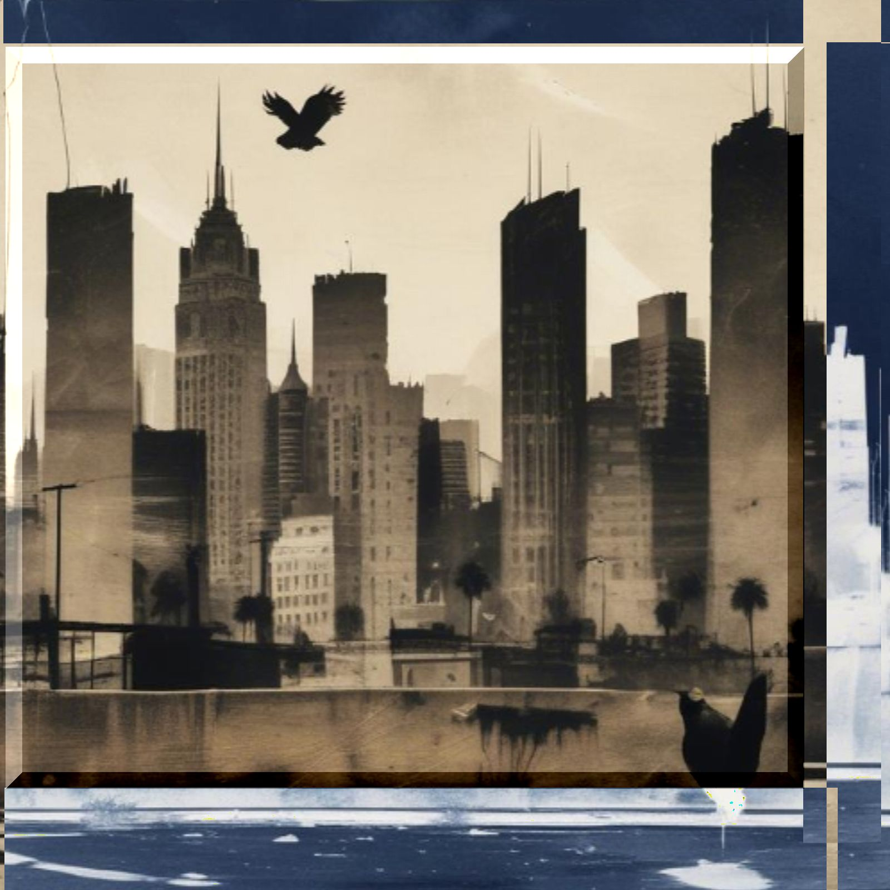

羽ばたくトキ
lyrics
シミが落ちない ここに
しがない光 どこに
さすれば さすらい
いやいや ありきたり だな
無意味なメロディ そこに
まだまだ いたよ
したり顔のサムライ
やっぱり 意味ありき だな
明るすぎる街は 画面だ
窓がない ただの広告だ
暗すぎる街もマジ ゴメンだ
カーテン たまには開けてみな
トキはもう いないんだっけ
じゃあ あのトキは？
羽ばたくトキ
飛び立つトキ
トキはもう もどらないって
じゃあ あのトキは？
羽ばたくトキ
飛び立つトキ
言葉の欠片 拾い
ただ集めては 笑い
並べては眺め
それじゃ 沈黙でいいかな
黙った そこのガキ
そう 君は気づいていた
そのスペースは 宇宙じゃなくて
空白だった
ぬるま湯が冷めはじめる
冷たくなってきている
ノルマが迫りはじめる
カルマと ごっこのサバイバル
トキはもう いないんだっけ
じゃあ あのトキは？
羽ばたくトキ
飛び立つトキ
トキはもう もどらないって
じゃあ あのトキは？
羽ばたくトキ
飛び立つトキ
濫立するpay
乱獲は今もつづく
きっと絶滅するまで
止まらないんだ
トキはもう いないんだっけ
じゃあ あのトキは？
羽ばたくトキ
飛び立つトキ
トキはもう もどらないって
じゃあ 僕たちは？
羽ばたくトキ
飛び立つトキ
notes
朱鷺だけではなく、絶滅危惧種は世界にはたくさんいるわけで。というか、朱鷺はもう絶滅危惧種ではなかったような気もする。
でも、生物多様性に対してどこまで介入するかという問題とともに、どこまで出来ることがあるのかということにも興味がないわけじゃないけどね。朱鷺保護センターを保護してるなんて言ってる人もいるわけで。ただなんでも費用と労力で見るならそれほどつまらないハナシはないし、未来も過去も実は、だれの思い通りにはなってないんだよ。
日本産の朱鷺はもういなくて、今の朱鷺は中国から贈られた朱鷺の子孫らしいね。でも遺伝子レベルでの差は個体差レベルのハナシなんだとか。アイツラとキミよりずっと近いかもしれないね。僕は、どこ産まれとか気にしないけど。
…と、まあ、それっぽいことツラツラ書いてるけど、本当はこの歌詞は自分でもかなりのお気に入りなんだよ。だから説明したくなっちゃう。
朱鷺と時間、システムや区切り、正しさ、向き合い方、意味をあとからでもいくらでも付けられる。そしてそれは親切であり、わかりやすいし、何より安心だろう。
でも、それも手放さなくてはならないのかもしれない。並べ過ぎて言葉が偉くなったら…。
うん、近づくのはここまでに。